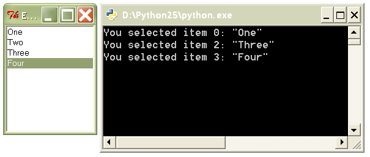

Decorator Recipe: Event Binding in Tkinter¶
Step 3¶
The “command” callback for the Button class is a special case of event handling in Tkinter. All other event handling goes through the Widget.bind method, which is used like this:
def onselect(evt):
# Note here that Tkinter passes an event object to onselect()
w = evt.widget
index = int(w.curselection()[0])
value = w.get(index)
print 'You selected item %d: "%s"' % (index, value)
lb = Listbox(frame, name='lb')
lb.bind('<<ListboxSelect>>', onselect)
Create a decorator function called bind, which accepts two arguments: the first argument is a widget object, the second is an event descriptor string (e.g. ‘<<ListboxSelect>>’).
from Tkinter import *
def bind(widget, event):
"""Write the body of this function"""
if __name__ == '__main__':
frame = Frame()
frame.master.title("Event binding with decorators")
frame.pack()
lb = Listbox(frame, name='lb')
for s in ['One', 'Two', 'Three', 'Four']:
lb.insert(END, s)
lb.pack()
@bind(lb, '<<ListboxSelect>>')
def onselect(evt):
w = evt.widget
index = int(w.curselection()[0])
value = w.get(index)
print 'You selected item %d: "%s"' % (index, value)
frame.mainloop()
Expected output:
Solution: solutions/tkinter3.py